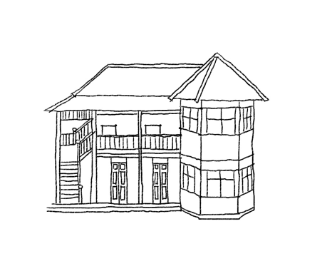

ดังที่นักมานุษยวิทยาและสังคมวิทยาให้ความสำ คัญกับเรือนพื้นถิ่น
ที่สะท้อนสภาพวัฒนธรรมของแต่ละสังคม จากกิจกรรมต่างๆ
ของมนุษย์ขณะที่อาศัยอยู่ในเรือนสถาปัตยกรรมพื้นถิ่นจึงแสดงออกถึงประสบการณ์และความชำ
นาญของกลุ่มชนในการสร้างสถาปัตยกรรมขึ้นจนเป็นมรดกทางสังคมที่ได้รับการถ่ายทอดต่อๆ
กันมา หรืออาจกล่าวได้ว่าสถาปัตยกรรมพื้นถิ่นคือสถาปัตยกรรมของสามัญชน
หรือชาวบ้าน และหมายรวมถึงสถาปัตยกรรมทุกประเภท ทั้งอาคารพักอาศัย
ทั้งชั่วคราวและถาวร อาคารสำ หรับอาชีพ เช่น ยุ้งข้าว โรงเก็บของ โรงสี
โรงปั้นหม้อ ฯลฯ ทั้งอาคารสาธารณะ วัดวาอารามในชุมชน ศาลากลางบ้าน
ศาลาท่าน้ำ ศาลาริมทาง ฯลฯ
ในสถาปัตยกรรมเรือนพื้นถิ่นจะเห็นว่าเรือนแต่ละแบบแม้จะมีลักษณะ
ร่วมบางอย่างอยู่บนพื้นฐานเดียวกัน
แต่ในส่วนประกอบปลีกย่อยก็ยังมีความเด่นชัดเป็นเอกลักษณ์เฉพาะตน
ตามที่แต่ละกลุ่มเชื้อชาติหรือชุมชนในท้องถิ่นต่างๆ
ซึ่งสถาปัตยกรรมที่เกิดจากความต้องการพื้นฐานของมนุษย์ไม่ได้สอนในด้านการออกแบบเชิงสร้างสรรค์
แต่เป็นการตกตะกอนทางความคิดที่สืบทอดมาเป็นมรดกทางวัฒนธรรมของกลุ่มชนนั้นๆ
ตาม สัญชาตญาณการดำ รงชีวิตแบบช้าๆ ทำ
ให้เกิดวิวัฒนาการทางสถาปัตยกรรมช้าตามไปด้วย
ดังนั้นรูปแบบของเรือนพื้นถิ่นจึงยังคงรักษาเอกลักษณ์ของตัวเองได้มากกว่าสถาปัตยกรรมของสังคมชั้นสูงโดยทั่วไป
๑.การสร้างสรรค์ทางสถาปัตยกรรมกับสัญชาตญาณ
ที่เป็นการออกแบบงานสถาปัตยกรรมเพื่อตอบสนองความต้องการพื้นฐานในการดำ
รงชีวิต ในการกิน นอน ให้ความอบอุ่น ป้องกันลมฝน
๒.การสร้างสรรค์สถาปัตยกรรมโดยได้รับอิทธิพลของสังคมและสภาพแวดล้อม
เป็นลักษณะงานสถาปัตยกรรมที่มีปัจจัยในด้านต่างๆ
สำหรับคนในท้องถิ่นส่วนใหญ่มักมองว่าเรือนพื้นถิ่นเป็นงานฝีมือที่ไม่ค่อยละเอียด
พบเห็นได้ทั่วไป เพราะเป็นสิ่งที่เห็นทุกวันจนคุ้นเคย
จนกลายเป็นเรื่องปกติธรรมดาและมองข้ามความสำ คัญไป
แต่หากศึกษาอย่างละเอียดแล้ว
จะพบถึงความสัมพันธ์ระหว่างคนกับสิ่งแวดล้อมได้อย่างลึกซึ้ง
ดังนั้นการศึกษาเรือนพื้นถิ่น ควรวิเคราะห์ตีความจากการสังเกต
ให้เห็นคุณค่าของงานสถาปัตยกรรมจากการศึกษารูปทรงของอาคาร
ความสัมพันธ์ในการจัดวางเนื้อที่ใช้งานที่ตอบสนอง
หรือสอดคล้องกับกิจกรรมในการดำ รงชีวิตอย่างเหมาะสม
และความงามของการวางพื้นที่ได้อย่างประสานกลมกลืน
ตลอดจนการใช้วัสดุก่อสร้างที่แสดงถึงสัจจะของธรรมชาติของวัสดุที่นำ
มาจากท้องถิ่นนั้นๆ
พัฒนาการ และ รูปแบบเรือนล้านนา
เรือนล้านนารูปแบบต่างๆ
สร้างขึ้นตามลักษณะการใช้พื้นที่ภายในเรือนและฐานะของเจ้าของเรือน
โดยเรือนแต่ละแบบต่างก็มีความสอดคล้องกันของวิถีชีวิตประจำ
วันกับการใช้ประโยชน์จากพื้นที่ที่แยกออกจากกันเป็นสัดส่วน
ซึ่งเรือนในยุคแรกๆ ของล้านนามักสร้างมาจากไม้ไผ่หรือเป็นเรือนเครื่องผูก
จากนั้นก็มีพัฒนาการมาเป็นเรือนที่สร้างจากไม้จริง แล้วนำ
รูปแบบของเรือนตะวันตกมาผสมผสานในยุคหลัง
ในอดีตการสร้างเรือนขึ้นอยู่กับฐานะของผู้สร้าง
หากเป็นคหบดีที่มีฐานะดีจะสร้างเรือนหลังใหญ่ด้วยไม้จริงทั้งหลัง
ส่วนชาวบ้านทั่วไปนิยมสร้างเรือนด้วยไม้ไผ่ผสมกับไม้จริง
โดยมีโครงสร้างเรือน เช่น เสา ขื่อ แวง เป็นไม้จริง ส่วนฝาและพื้นเรือนทำ
มาจากไม้ไผ่สับฟาก หากเรียงลำ ดับตามพัฒนาการของเรือนล้านนา
สามารถแบ่งรูปแบบเรือนดังนี้
๑. เรือนเครื่องผูก
เป็นเรือนที่สร้างขึ้นด้วยไม้ไผ่ ตัวเรือนขนาดเล็ก
ดังจะเห็นรูปแบบของเรือนเครื่องผูกนี้ได้ตามภาพจิตรกรรมฝาผนังของล้านนา
มีรูปแบบเป็นเรือนจั่วเดียวยกพื้นสูง
ในอดีตเรือนเครื่องผูกเป็นเรือนของชาวบ้านทั่วไป
ที่สร้างขึ้นกันเองโดยการตัดไม้ไผ่มาประกอบกันขึ้นเป็นโครงสร้างของเรือน
แล้วใช้ตอกหรือเส้นหวายยึดให้ติดกัน
อาจมีการใช้เสาเรือนด้วยไม้จริงบ้าง
แต่โดยรวมแล้วองค์ประกอบของเรือนส่วนใหญ่จะทำ มาจากไม้ไผ่ เช่น
โครงสร้างหลังคา ฝาและพื้นเรือนที่ทำ มาจากไม้สับฟาก
นอกจากนั้นเรือนเครื่องผูกยังเหมาะสำ หรับคู่แต่งงานที่กำ
ลังเริ่มสร้างครอบครัวใหม่
มักสร้างเป็นเรือนเครื่องผูกแบบชั่วคราวก่อนที่จะเก็บเงินและไม้จริงได้พอเพียงสำ
หรับขยายเรือนต่อไป
๒. เรือนไม้จริง เป็นเรือนที่สร้างขึ้นจากไม้เนื้อแข็งทั้งหมด
ในล้านนานิยมใช้ไม้สักเพราะหาได้ง่าย มีอายุการใช้งานนาน
อีกทั้งเนื้อไม้ไม่แข็งมากนัก จึงสามารถเจาะหรือแต่งรูปไม้ได้ง่าย
ขนาดของเรือนขึ้นอยู่กับฐานะของเจ้าของเรือน ซึ่งมักทำ
เป็นเรือนที่มีทั้งจั่วเดียวและสองจั่ว
โดยเรือนที่มีจั่วเดียวจะมีโครงสร้างเช่นเดียวกับเรือนเครื่องผูก
เพียงแต่สร้างขึ้นมาจากไม้จริง
ตั้งแต่โครงสร้างหลังคาไปจนถึงฝาและพื้นเรือนที่ทำ ด้วยไม้กระดาน
ด้านหน้าเรือนนิยมทำ เป็นชานโล่ง แล้วเชื่อมต่อตัวชานกับเรือนด้วยเติ๋น
ส่วนเรือนที่สร้างแบบสองจั่วหรือเรือนจั่วแฝด ทางล้านนาเรียกว่า
“เรือนสองหลังฮ่วมพื้น” มีการแบ่งพื้นที่การใช้สอยเป็นระเบียบมากขึ้น
โดยจั่วที่มีขนาดใหญ่อยู่ทางด้านตะวันออกเป็นเรือนนอน
อีกจั่วที่ขนาดเล็กลงมาอยู่ทางด้านตะวันตก
เป็นส่วนของเรือนครัวหรือครัวไฟ
ใช้เป็นที่ประกอบอาหารและเก็บเครื่องมือเครื่องใช้ต่างๆ
ระหว่างชายหลังคาของเรือนทั้งสองที่มาจรดกันจะสร้าง
“ฮ่อมริน”หรือรางรินสำ หรับระบายน้ำ ฝน
ส่วนชานก็จะสร้างทั้งด้านหน้าเรือนและหลังเรือน
ทั้งนี้หากสมาชิกในครอบครัวมีจำ นวนมากก็จะขยายห้องให้กว้างขึ้น
โดยใช้พื้นที่ใต้ชายคาของจั่วแฝดทั้งสองเป็นห้องโถงใหญ่
เพื่อเพิ่มบริเวณใช้สอยสำ หรับนอนและอยู่อาศัยของสมาชิกทั้งหมด
แล้วสร้างเรือนครัวแยกออกมาจากตัวเรือนนอน
โดยสร้างระเบียงหรือชานเชื่อมต่อเรือนทั้งหมดเข้าด้วยกัน
ส่วน “เรือนกาแล” ที่เจ้าพญาและคหบดีนิยมสร้างนั้น
มีรูปแบบเป็นเรือนจั่วแฝดขนาดใหญ่เช่นเดียวกันกับเรือนสองหลังฮ่วมพื้น
เพียงแต่เพิ่ม “กาแล” ติดไว้บนยอดจั่วหลังคา
มีลักษณะเป็นแผ่นไม้รูปกากบาทแกะสลักด้วยลวดลายที่สวยงาม
เชื่อว่ารูปแบบของเรือนกาแลนี้มีพัฒนาการมาจากเรือนของกลุ่มชาวลัวะที่ใช้ไม้ไผ่วางไขว้กันเหนือยอดจั่วเรือน
ในช่วง ๑๐๐-๘๐ ปีที่ผ่านมาชาวบ้านทั่วไปนิยมสร้างเรือนด้วยไม้จริงมากขึ้น
จึงเกิดรูปแบบเรือนที่มีเอกลักษณ์แตกต่างกันไปตามแต่ละท้องถิ่น เรียกว่า
“เรือนพื้นถิ่น”
เป็นเรือนที่มีการผสมผสานกันของรูปแบบเรือนโบราณล้านนากับเรือนของกลุ่มชาติพันธุ์ต่างๆ
ที่ถูกกวาดต้อนเข้ามาอยู่ในดินแดนล้านนา เช่น ไทลื้อ ไทเขิน ไทยอง จึงทำ
ให้เรือนในยุคนี้มีความหลากหลายทั้งรูปแบบผังเรือนและการตกแต่ง
ทั้งยังเกิดพัฒนาการของการจัดสรรพื้นที่ใช้สอยภายในตัวเรือนให้เป็นสัดส่วนมากขึ้น
ซึ่งแบ่งออกเป็นพื้นที่ต่างๆ ดังนี้
-
เรือนนอน อยู่ด้านตะวันออก
เป็นห้องนอนขนาดใหญ่ห้องเดียวยาวตลอดตัวเรือน
แต่จะแบ่งออกเป็นห้องเล็กๆ ให้กับลูก
โดยใช้ผ้ากั้งหรือผ้าม่านขึงไว้ตามช่วงเสา
การนอนต้องหันศีรษะไปทางทิศตะวันออก
บริเวณฝาผนังด้านปลายเท้าเป็นที่วางหีบหรือซ้าสำ
หรับใส่เสื้อผ้าหรือของใช้ส่วนตัว และมี “แป้นต้อง” ที่ทำ
จากไม้กระดานวางเป็นแนวยาวตลอดตัวเรือน
เพื่อเป็นทางเดินออกไปด้านนอกห้องนอนโดยเกิดเสียงดังรบกวนผู้อื่น
บริเวณหัวเสาเอกหรือเสาพญามี “หิ้งผีเรือน”เป็นชั้นไม้
ใช้วางของสักการะ
-
เรือนไฟหรือเรือนครัว
ใช้เป็นพื้นที่ประกอบอาหารและเก็บของใช้ต่างๆ
ในอดีตมีเตาไฟเป็นก้อนหินสามเส้าวางบนกระบะสี่เหลี่ยม
ต่อมาจึงใช้เตาอั้งโล่แทน เหนือเตาไฟมีชั้นวางของทำ
มาจากไม้ไผ่สานโปร่งๆ
ใช้วางเครื่องใช้ประเภทงานจักสานและเก็บเครื่องปรุง จำ พวกหอม กระเทียม
ฯลฯ จะช่วยป้องกันมอด แมลงต่างๆ ได้ ฝาผนังของเรือนครัวจะทำ แบบห่างๆ
หรือทำ เป็นไม้ระแนงเพื่อช่วยระบายอากาศจากควันไฟ
-
เติ๋น เชื่อมต่อกับชานด้านหน้าของตัวเรือน
โดยยกพื้นสูงขึ้นจากระดับพื้นชานให้พอนั่งพักเท้าได้
เป็นพื้นที่กึ่งอเนกประสงค์มีผนังปิดเพียงด้านที่ติดกับห้องนอน ใช้สำ
หรับอยู่อาศัยในช่วงกลางวัน เช่น ทำ งานจักสาน นั่งเล่น
รวมถึงใช้เป็นที่รับแขก บริเวณฝาเรือนด้านตะวันออกมีหิ้งพระสำ
หรับสักการบูชา
-
ชาน
เป็นพื้นที่เปิดโล่งอยู่ทางด้านหน้าเรือนเชื่อมกับบันไดทางขึ้น
บริเวณขอบชานด้านที่ติดกับเติ๋นมี “ฮ้านน้ำ ”
สร้างเป็นชั้นไว้เป็นที่วางหม้อน้ำ ดื่ม
หากเป็นชานด้านหลังเรือนจะเชื่อมกับเรือนครัว
ใช้เป็นที่ซักล้างและวางภาชนะต่างๆ
-
ใต้ถุนเรือน ชาวล้านนาจะไม่นิยมอยู่อาศัยใต้ถุนเรือน
เพราะบริเวณนี้เป็นที่เก็บเครื่องมือเครื่องใช้ต่างๆ
และเป็นพื้นที่เลี้ยงสัตว์ ส่วนห้องน้ำ ก็จะสร้างแยกออกมาจากตัวเรือน
มักอยู่ด้านหลังเรือนใกล้กับทางขึ้นบันไดหลัง
๓. เรือนร้านค้า ลักษณะเป็นเรือนในแนวขวางขนานไปกับถนน
มีตั้งแต่ชั้นเดียวไปจนถึงสามชั้น
เรือนร้านค้าของล้านนาในอดีตใช้อิฐและไม้เป็นโครงสร้างหลัก
หากสร้างชั้นเดียวจะเลือกใช้ไม้หรือผนังก่ออิฐก็ได้ แต่ถ้าเป็นเรือนที่มี
๒-๓ ชั้นขึ้นไป
ก็จะสร้างชั้นล่างด้วยผนังปูนต่อด้วยชั้นบนสุดเป็นไม้เนื้อแข็ง
เพื่อให้ชั้นล่างสามารถรับน้ำ หนักของชั้นบนรวมถึงหลังคาได้
เนื่องจากโครงสร้างเรือนในอดีตใช้วิธีการก่ออิฐหนาเป็นโครงสร้างอาคารแทนการใช้ขื่อคานและการเสริมเหล็กเส้นดังเช่นในปัจจุบัน
ดังนั้นจึงไม่สามารถสร้างเรือนให้มีความสูงเกิน ๓ ชั้นได้
ลักษณะเด่นของเรือนร้านค้าจะมีพื้นที่ชั้นล่างรองรับการค้าขายโดยเฉพาะ
มักทำ เป็นประตูบานเฟี๊ยมยาวตลอดทั้งแนวของอาคาร
เมื่อเปิดประตูออกมาก็จะเห็นพื้นที่ทั้งหมดของหน้าร้าน
ส่วนพื้นที่ด้านหน้าเรือนชั้นบนนิยมทำ เป็นระเบียงยาวตลอดตัวเรือน
ด้านในเรือนก็จะเป็นที่พักอาศัย ในช่วงที่มีการค้าขายไม้ในล้านนา
รูปแบบเรือนร้านค้ามีการตกแต่งด้วยลวดลายไม้ฉลุอย่างสวยงามตามรูปแบบอิทธิพลศิลปะตะวันตก
ดังจะเห็นรูปแบบเรือนร้านค้าเช่นนี้ตามเส้นทางสายธุรกิจในอดีต เช่น
ถนนท่าแพ, ถนนเจริญราษฏ์ จังหวัดเชียงใหม่, ถนนกาดกองต้า จังหวัดลำ ปาง
เป็นต้น
๔. เรือนแบบตะวันตก
คือเรือนที่ได้รับรูปแบบโครงสร้างและการตกแต่งมาจากประเทศในแถบตะวันตก
ซึ่งมาพร้อมกับการทำ ไม้ในล้านนา
เรือนแบบตะวันตกนี้เป็นที่นิยมในกลุ่มของเจ้านายล้านนา คหบดี พ่อค้าคนจีน
รวมถึงกลุ่มคนพม่า – ไทใหญ่ ที่ร่ำ รวยจากการค้าไม้ในช่วงรัชกาลที่ ๕
ลักษณะของเรือนสามารถแบ่งออกเป็น ๓ รูปแบบ คือ

เรือนขนมปังขิง
เป็นชื่อเรียกของเรือนที่ตกแต่งด้วยลวดลายไม้ฉลุตามส่วนต่างๆ ของเรือน
เช่น เชิงชายคา ระเบียง ช่องลม เป็นต้น
เรือนหลังคาทรงปั้นหยา เป็นรูปแบบหลังคาที่ไม่มีหน้าจั่ว
หลังคาตามแนวขวางของตัวเรือนจึงมุงกระเบื้องจนเต็มทั้งหมด
เรือนหลังคาทรงมะนิลา มีลักษณะคล้ายกับหลังคาทรงจั่ว
แต่เป็นจั่วสามเหลี่ยมขนาดเล็กต่อด้วยชายหลังคาขนาดใหญ่คลุมลงมาจนถึงตัวเรือน
วัสดุที่ใช้สร้างเรือนแบบตะวันตกมีทั้งไม้และปูนซีเมนต์
ส่วนใหญ่จะใช้ปูนเป็นโครงสร้างและก่อเป็นอาคารทรงตึก
บางหลังก็สร้างจากไม้จริงทั้งหมดพร้อมประดับตกแต่งด้วยลวดลายไม้ฉลุ
ลวดลายส่วนใหญ่ได้รับรูปแบบมาจากตะวันตก มักทำ เป็นลายดอกไม้ ลายเถาว์
หรือลายหลุยส์ ฯลฯ การตกแต่งเช่นนี้ได้รับอิทธิพลมาจากศิลปะแบบวิคตอเรียน
ตามรสนิยมของประเทศอังกฤษ
พื้นที่ใช้สอยภายในตัวอาคารแบ่งออกเป็นห้องต่างๆ
แยกตามประเภทของการใช้งาน โดยสร้างตามผังของเรือนตะวันตกที่มีห้องต่างๆ
เช่น ห้องนอน ห้องนั่งเล่น ห้องรับแขก ห้องรับประทานอาหาร เป็นต้น
ซึ่งการแบ่งห้องเช่นนี้เพิ่งจะเปลี่ยนแปลงหลังจากที่รับเอารูปแบบเรือนมาจากตะวันตก
องค์ประกอบทางโครงสร้าง
โครงสร้างเรือน
-
ตอม่อ เรือนพื้นถิ่นล้านนาภาคเหนือแต่เดิมไม่มีฐานราก
บางพื้นที่จะยกหินมาตั้งเป็นฐานรากก่อนวางเสา
บางพื้นที่จะขุดหลุมปักเสาลงดิน และกลบให้แน่น
-
เสา คือไม้กลม, สี่เหลี่ยม หรือแปดเหลี่ยม
ขนาดหน้ากว้างโดยประมาณ ๒๐-๓๐ เซนติเมตร
นิยมใช้ไม้ต้นเดียวสูงถึงโครงสร้างหลังคา เป็นไม้เนื้อแข็งประจำ ถิ่น
เช่น ประดู่ป่า มะค่าโมง เป็นต้น ส่วนโคนฝั่งดินหรือวางบนหิน
ส่วนเสาพ้นดินแบ่งเป็น ๒ ส่วน ส่วนใต้ถุนและส่วนตัวเรือน
กลางเสาจะใช้วิธีการบากข้างหรือเจาะรูตรงกลาง เพื่อใส่รอด (คาน)
โครงสร้างพื้น และปลายหัวเสาทำ วิธีเข้าไม้เพื่อวางโครสร้างหลังคา เช่น
การควั่นหัวเสาเพื่อประกอบขื่อ, การบากหัวเสาเพื่อวางขื่อ
และการวางขื่อใส่สลักบนหัวเสา เป็นต้น
-
แวง (รอด, คาน) คือไม้เหลี่ยมแบน ขนาดโดยประมาณ ๕ x ๑๕
เซนติเมตร เสียบเข้ากลางเสา
วางเป็นแนวยาวตามความกว้างของเรือนทุกช่วงเสา แบ่งเป็น ๓ รูปแบบ คือ
แวงรอดคือแวงที่สอดผ่านรูเสา, แวงคีบคือแวงที่ประกบเสาด้านนอก
โดยการบากเสาเพื่อให้อมแวงไว้เล็กน้อย ถ้าใช้คีบ ๒
ตัวประกบสองด้านของเสาเรียกว่าแวงคีบคู่
ถ้าใช้ตัวเดียวเรียกว่าแวงคีบเดี่ยว และหลาบแวง
มีลักษณะทั่วไปเหมือนแวงรูปแบบที่ ๑ แต่วางเป็นแนวยาวของเรือน ทำ
หน้าที่รับตง เป็นโครงสร้างรับน้ำ หนักหลักของพื้นเรือน ถ่ายเทน้ำ
หนักจากพื้นเรือนลงมายังเสา
-
ตง (อ่าน ต๋ง) คือไม้เหลี่ยมแบนขนาดเล็ก ขนาดโดยประมาณ ๓.๕ x
๗.๕ เซนติเมตร วางขวางแวงตามแนวยาวของเรือน ทุกระยะ ๒๐-๔๐ เซนติเมตร
ตามวัสดุที่ใช้ปูพื้น ทำ หน้าที่รับแผ่นไม้พื้น
-
พื้น คือไม้ไผ่ (ฟาก) หรือไม้แผ่น ขนาดหน้ากว้างโดยประมาณ ๑๐-๒๐
เซนติเมตร ปูวางขวางกับตง ตีปิดตามรูปแบบการใช้งาน เช่น
ตีชิดคือการวางแผ่นพื้นให้ชิด เหมาะสำ
หรับพื้นที่ที่ไม่ต้องการการระบายน้ำ เช่น ห้องนอน เป็นต้น
อีกรูปแบบคือตีเว้นร่องคือการตีแผ่นไม้ให้มีระยะห่างประมาณ ๑ เซนติเมตร
เหมาะสำ หรับพื้นที่ที่ต้องการการระบายน้ำ เช่น ครัวไฟ, ระเบียง และชาน
เป็นต้น
-
ไม้แป้นท้อง (อ่าน ไม้แป้นต้อง) คือไม้แบนขนาดกว้างเท่าไม้พื้น
ลักษณะหนากว่า ปูวางบนแวงของเสา ไม่ได้วางอยู่บนตง
จึงปูตามความยาวของเรือน โดยผิวหน้าเรียบเสมอเท่าพื้นเรือน
ไม้แป้นท้องจึงเป็นไม้ที่หนาเท่ากับความหนาของตงและพื้นรวมกัน
และมักตรงกับบริเวณปักเสาดั้ง
มีการเจาะรูสี่เหลี่ยมเพื่อรับปลายของเสาดั้ง
เรือนบางหลังพบไม้แป้นท้องบริเวณเติ๋น และบริเวณด้านหนึ่ง
ของไม้แป้นท้องจะเจาะเป็นช่อง เรียกว่า ช่องแมวลอด
-
คร่าว คือไม้เหลี่ยมประกอบขึ้นโครงสร้างผนังตั้งบนพื้นเรือน
ตงหรือแวง ทำ หน้าที่เป็นโครงยึดไม้ฝา (ผนัง) แต่ละรูปแบบชนิดของวัสดุ
โดยใช้วิธีการยึดตามภูมิปัญญาพื้นถิ่นแต่ละพื้นที่
-
ฝา คือไม้แผ่น ขนาดหน้ากว้างโดยประมาณ ๑๐-๒๐ เซนติเมตร
ตีปิดเป็นแผงยาวขวางกับโครงคร่าวไปตามตลอดความยาวหรือความกว้างของเรือน
เว้นส่วนของประตูและหน้าต่าง วัสดุที่ใช้ทำ ฝามี ๒ ชนิดคือ
ไม้จริงและไม้ไผ่ โดยไม้ไม้จริง (ไม้แป้น)
เป็นฝาไม้สักหรือไม้ชนิดอื่นที่ประกอบเป็นแผงตามลักษณะโครงสร้างแบ่งได้
๓ รูปแบบคือ
รูปแบบฝาตาผ้าหรือฝาจีบ
คำว่าฝาตาผ้าหมายถึงฝาที่มีการแบ่งช่องเหมือนตารางผ้า
ฝาชนิดนี้ประกอบด้วยไม้ซึ่งเรียกลูกตั้งลูกนอนเป็นไม้กรอบตามแนวตั้งหรือแนวนอน
รูปแบบฝาไม้ลูกฟัก คือไม้ที่บรรจุภายในคร่าว
ฝาชนิดนี้มีลักษณะเหมือนฝาลูกฟักของเรือนฝาปะกน
แต่ใช้ไม้ขนาดใหญ่และหนามากกว่า แบ่งฝาตามแนวตั้งและแนวนอนเป็นช่วงๆ
ช่วงบนสุดและล่างสุดมีลักษณะค่อนสี่เหลี่ยมด้านเท่า คล้ายลูกฟักคอสอง
(ลูกฟักบนสุด) และลูกฟักตีนช้าง (ลูกฟักล่างสุด) ของเรือนฝาปะกน สำ
หรับส่วนกลางลูกฟักมีความยาวคล้ายฝาสายบัวของเรือนฝาปะกนลูกตั้งลูกนอน
ทำ กรอบคิ้วให้สวยงาม ฝาลักษณะนี้มีลักษณะประณีตและสวยงามเหมาะสำ
หรับเรือนผู้มีฐานะหรือเจ้านาย
รูปแบบฝาตั้งและฝาแป้นหลั่งชนิดต่างๆ
โครงสร้างประกอบด้วยกรอบล้อมทั้ง ๔ ด้าน
กรอบเซาะร่องเพื่อใส่แผ่นไม้หน้ากว้างโดยประมาณ ๓๐-๔๐ เซนติเมตร
(ลูกกรุ) ความหนาประมาณ ๒ เซนติเมตร กรุภายในกรอบ
เนื่องจากอาจเกิดร่องเล็กตรงรอบต่อตามแผ่นไม้แนวตั้ง
จึงตีปิดรอยเป็นแนวยาวตามแนวตั้งด้านนอก หรือใช้ไม้คิ้วติดปิดด้านนอก
ฝาไม้ไผ่ฟาก ไม้บั่ว (ไม้ไผ่สาน)
คือการใช้ไม้ไผ่ประกอบหรือสานเป็นฝาเรือน
นิยมใช้กับเรือนลักษณะตูบหรือกระท่อม คือฝาเป็นแผงมีความยาวตลอดส่วน
ลักษณะลายสานทรงไม้ไผ่ขัดขึ้นลงสลับกันเรียกว่า ลายขัดดาน ฝาไม้บั่ว
ส่วนใหญ่ใช้เฉพาะด้านในของเรือน ไมโดนแดดโดนฝน ทำ ให้ทนทานเช่นไม้จริง
ไม้ไผ่ที่ใช้คือ ไม้บง ไม้ไผ่สีสุก
ลักษณะฝาเรือนพิเศษคือฝาเรือนเอนออก เรียกว่า ฝาเติกหรือฝาตาก ทำ
มุมประมาณ ๘ องศาจากแนวดิ่ง ทำ ให้เรือนภายในกว้างขวาง
สามารถติดตั้งหิ้งระหว่างช่วงเสาได้กว้างและสะดวก
ฝาเรือนห่างจากแนวดิ่งของเสาประมาณ ๑๔-๒๔ เซนติเมตร
ฝาลับนาง ฝาส่วนพิเศษของฝาด้านในของเรือนที่ยื่นออกไป ๔๐-๕๐
เซนติเมตร สู่บริเวณเติ๋น นัยว่าเป็นฝาที่ช่วยกำ บังหญิงสาวขณะทำ
งานบนเรือน เรียกอีกชื่อวา ฝาปิดหน้าเติ๋น ถือเป็นองค์ประกอบต่อเติม
มีความสูงตั้งแต่ช่วงเอวถึงขื่อ
-
ประตู โครงสร้างที่สำคัญของประตูประกอบด้วยกรอบและบานประตู
มีลักษณะโครงสร้าง ๒ ชนิดคือ รูปแบบกรอบเป็นส่วนหนึ่งของฝา คือทำ
ให้กรอบประตู เป็นส่วนหนึ่งของคร่าว (กรอบฝา) และ
รูปแบบกรอบยึดติดกับฝาภายหลัง คือทำ ไม้กรอบมาเสริมต่างหาก
ใช้ไม้เหลี่ยมขนาดโดยประมาณ ๓ x ๑๒ เซนติเมตร ทำ
เป็นกรอบมาติดเสริมกับฝาทางด้านนอกห้อง
ซึ่งประตูห้องนอนหลักจะมีองค์ประกอบเพิ่มเติมดังนี้
หัมยนต์ เป็นนัยยะเป็นลักษณะของเจ้าเรือน แกะสลักเป็นภาพต่างๆ
ให้มีความสวยงาม เพื่อไม่ให้สิ่งไม่ดีเข้ามา ติดตั้งไว้ด้านบนของกรอบ
ประตูเรือนนอน โดยยึดกับกรอบหัมยนต์หรือกรอบคร่าวฝา
ธรณีประตู คือไม้ขนาดความกว้างเท่าประตู สูงประมาณ ๒๐ เซนติเมตร
อาจตกแต่งให้เว้าโค้งสวยงาม (ธรณี) ต้องก้าวผ่านธรณี
ประตูทุกครั้งเมื่อเข้าห้องนอน ห้ามเหยียบ
บานประตู ส่วนใหญ่ใช้ไม้หน้ากว้างหลายแผ่นต่อกัน หรือ ใช้ไม้แผ่น
เดียว ประกอบเข้ากับกรอบประตูด้วยเดือยบนและล่าง ที่ยื่นออกมา
จากบานประตู เพื่อสวมลงรูของไม้ข่มประตู (ข่มตู, ธรณีประตู, ก็อก
ข้าวแมว) และสอดขึ้นใส่รูข่มหวีประตู (ข่มหัวตู) บานประตูออกแบบ
ให้เปิดเข้าด้านในห้องนอน
แซ่ว (อ่าน แส้) คือกลอนหรือดาน เป็นสลักไม้ที่เลื่อนได้
ยึดติดกับ กรอบประตู เมื่อปิดประตูแล้วเลื่อนสลักจากกรอบภายในห้องมาขัด
ไว้ ทำ ให้ไม่สามารถเปิดประตูได้ ลักษณะการเลื่อนสลักไม้เรียกว่า ลงแซว่
จดแซว่ ลั่นดาด หรือ ขัดกลอน
-
ปล่อง (หน้าต่าง) คือช่วงฝาที่เป็นช่องว่าง
ลักษณะสี่เหลี่ยมผืนผ้าเป็นส่วนใหญ่ ทั้งแบบมีกรอบและไม่มีกรอบ
แบบเปิดปิดได้และเปิดปิดไม่ได้ หน้าต่างมักมีขนาดเล็ก
ขนาดเล็กมากมีขนาดโดยประมาณ ๑๐ x ๑๘ เซนติเมตร และมีจำ นวนน้อย
บ้างก็ไม่มีเลย เนื่องจากพื้นฐานหลายสาเหตุ เช่น สภาพอากาศ เป็นต้น คำ
ว่า ปล่อง หมายถึงช่องเอาไว้ส่งดูภายนอกเรือน
โครงสร้างหลังคา
-
ขื่อ คือไม้เหลี่ยมแบน ขนาดโดยประมาณ ๗.๕ x ๑๕ – ๑๐ x ๒๐
เซนติเมตร ประกอบเข้ากับส่วนบนของเสาตามรูปแบบวิธีพื้นถิ่น
วางยาวตามความกว้างของเรือน ทำ หน้าที่ถ่ายเทน้ำ
หนักจากหลังคาลงมายังเสา
-
แปพ่าง (แปหลวง แปพู้ หรือแปหัวเสา)
คือไม้เหลี่ยมแบนมีขนาดเท่าขื่อ
วางทอดตลอดความยาวของเรือนโดยวางทับขื่อ
ใช้วิธีการบากเพื่อให้โครงสร้างยึดได้พอดี
และมีรูทุกช่วงเพื่อใช้สวมหัวเทียนเสาเรือน ทำ หน้าที่ถ่ายเทน้ำ
หนักจากหลังคา และเป็นส่วนหยุดของฝาตอนบนตามแนวยาวของเรือน
-
ดั้ง คือไม้เหลี่ยมแบน ขนาดโดยประมาณ ๕ x ๒๐ เซนติเมตร
วางระหว่างเสาบนขือใช้วิธีตั้งตามรูปแบบพื้นถิ่นแต่ละพื้นที่
ปลายล่างสอดกลางขือยึดเข้าเดือย ปลายบนบากเข้ารูปกับอกไก่
และเสียบเดือย ดั้งแขวนหรือใบดั้งต่างจากเสาขือ
คือปลายล่างจะสิ้นสุดเพียงขื่อ ไม่มีเสาดั้งมารับน้ำ
หนักถ่ายลงสู่พื้นดิน
-
ตั้งโย (จันทัน) คือไม้เหลี่ยม ขนาดโดยประมาณ ๕ x ๒๐ เซนติเมตร
ใช้ไม้จำ นวน ๒ ชิ้น ประกอบเป็นด้านข้างดั้งเข้ารูปสามเหลี่ยม
คือปลายล่างวางบนขือที่ปลายหัวเสา ปลายบนยึดติดกับดั้ง
อาจบากและเข้าไม้ด้วยเดือย เพื่อให้แข็งแรง ทำ
หน้าที่เพื่อรองรับอกไก่และเป็นโครงสร้างแทนจั่ว
-
แปจ๋อง (อกไก่) คือไม้เหลี่ยมข้าวหลามตัด ขนาดโดยประมาณ ๑๐-๑๒
เซนติเมตร วางตลอดความยาวเรือนบนดั้งและตั้งโย้
ยื่นหัวท้ายออกข้างละประมาณ ๖๐-๗๐ เซนติเมตร
เป็นเครื่องไม้ที่ตั้งอยู่ยอดสุดของโครงสร้างหลังคา ทำ
หน้าที่ยึดปลายกลอนเพื่อเป็นโครงสร้างของวัสดุมุงหลังคา
-
คาบ คือไม้เหลี่ยมขนาดโดยประมาณ ๔ x ๗.๕ – ๕ x ๑๐ เซนติเมตร
พาดตามแนวยาวของเรือนบนสันจั่วและตั้งโย (จันทัน) โดยใช้วิธีการบาก
วางยาวตลอดความยาวของหลังคา ยื่นหัวท้ายจากแนวจั่วเช่นเดียวกับแปจ๋อง
แต่ละด้านใช้คาบ ๓ ตัว วางจัดระยะให้พอดีกัน
-
กลอน คือไม้เหลี่ยมแบน ขนาดโดยประมาณ ๑.๕ x ๗.๕ เซนติเมตร
ปลายบนยึดติดกับอกไก่ ปลายล่างทอดสู่แนวชายคา ซึ่งมีแป้นน้ำ
ย้อยหรือไม้เชิงชายตีติด
-
ก้านฝ้า (แป) คือไม้เหลี่ยมแบนหรือสี่เหลี่ยมด้านเท่า
ขนาดโดยประมาณ ๑.๕ x ๒.๕ – ๒.๕ x ๒.๕ เซนติเมตร
ยึดติดกับกลอนตามความยาวของหลังคา วางทุกระยะ ๒๐ เซนติเมตร
หรือตามวัสดุมุงหลังคา ทำ หน้าที่เป็นที่ยึดเกาะให้กับวัสดุมุงหลังคา
เช่น กระเบื้องดินขอ กระเบื้องดินเผา เป็นต้น
-
กระเบื้อง คือวัสดุมุงหลังคา
เรียกขื่อตามลักษณะและวัสดุกระเบื้อง เช่น กระเบื้องดินขอ
กระเบื้องดินเผา ขนาดโดยประมาณ ๑๐ x ๒๐ เซนติเมตร เป็นต้น
ทำหน้าที่มุงหลังคาป้องการแดดลมฝน
-
ครอบหลังคา วางครอบกระเบื้องทุกระยะช่องว่าง
ทำหน้าที่ป้องกันการรั่วซึม
ในอดีตใช้ดินหรือปูนในการทับหลังมุงกระเบื้อง
-
แป้นน้ำย้อย หรือแป้นตีนชาย (องค์ประกอบต่อเติม)
คือไม้เหลี่ยมขนาดโดยประมาณ ๒.๕ x ๑๐ – ๑๕ เซนติเมตร
ยึดติดกับปลายล่างของกลอน โดยมีปลายเต้าขือยื่นจากเสามารับน้ำ หนัก
-
แปลอย คือไม้เหลี่ยมขนาด ๔ x ๗.๕ – ๕ x ๑๐ เซนติเมตร
คือแปตัวล่างสุด อยู่ใกล้ชายคา ห่างจากปลายกลอนหรือแป้นน้ำ ย้อยประมาณ
๒๐-๓๐ เซนติเมตร มีความยาวตลอดความยาวหลังคา ลักษณะลอยตัวช้อนรับกลอน
บางแห่งมียาง (เต้า) คือไม้เหลี่ยมยื่นจากเสามารับน้ำ หนักแปลอย ทำ
หน้าที่คล้ายไม้เชิงกลอนเรือนไทยภาคกลาง
-
ปั้นลม คือไม้เหลี่ยม ขนาดโดยประมาณ ๓.๕ x ๑๕ – ๒๐ เซนติเมตร
วางบนแปพ่างและทอดยาวบนคาน (แปหัวเสา)
ขึ้นไปบรรจบที่สันหลังคาเหนืออกไก่ ใช้วิธีบากเข้าไม้
บางหลังมีปลายยื่นขึ้นไปอีก ๗๐-๑๐๐ เซนติเมตร มักแกะสลักให้สวยงาม
เรียกว่า กาแล
-
แหนบ (จั่ว) คือแผงไม้สามเหลี่ยมหน้าจั่ว ประกอบด้วยไม้กรอบรอบ
กรุด้วยแผ่นไม้บาง แผงจั่วถูกแบ่งเป็นช่องต่างๆ
กรุจากไม้แผ่นด้านในหรือกรุด้วยการเข้าไม้แบบลูกฟัก
อาจมีการประดับกรอบด้วยไม้คิ้ว
(ไม้ขนาดเล็กแต่งเป็นร่องโค้งนูนเว้าลดหลั่นกัน) ทำ
หน้าที่ปิดส่วนของหลังคาด้านสกัด กันลมฝนและบังแดด
เรือนบางเรือนพบจั่วภายใน เรียกว่า จั่วกรุกั้นห้อง ทำ
หน้าที่แบ่งสัดส่วนภายในเรือน
มีโครงสร้างและขนดเหมือนจั่วหน้าและหลังเรือน
มักมีลักษณะพิเศษคือมีช่องให้อากาศถ่ายเทโดยการไม่ใส่ลูกกรุทุกช่อง
เว้นช่องไว้ใส่ไม้กลึงเรียกว่าลูกแก้ว หรือใส่ไม้ลูกกรงสี่เหลี่ยม
การเว้นช่องลูกกรุมักเว้น ๒ ระดับ คือ ระดับช่องที่ ๒ และ ช่องที่ ๓
นับจากฐานจั่วขึ้นมา
-
ขัวอย้าน ไม้แล่นตีนดั้ง คือไม้เหลี่ยมขนาดโดยประมาณ ๔ x ๗.๕
เซนติเมตร หรือไม้ไผ่ลำ วางยึดประกบด้านข้างระดับกึ่งกลางดั้ง
มีความยาวจากจั่วหน้าเรือนถึงจั่วหลังเรือน
ระดับขัวอย้านจะอยู่ช่องช่องกรุระดับที่ ๓ หากมีจั่วกรุกั้นห้อง
จะเว้นช่องที่ ๓ เพื่อให้ขัวอย้านลอดผ่าน
-
ยาง (เต้า) คือไม้เหลี่ยมแบน ขนาดโดยประมาณ ๕ x ๑๐ เซนติเมตร
ยาวโดยประมาณ ๗๐ เซนติเมตร ทำ หน้าที่รับส่วนล่างของโครงหลังคาคือ
แปลอย โดยลอดผ่านรูใกล้ปลายเสา ยื่นออกไปประมาณ ๕๐-๗๐ เซนติเมตร
-
ยางค้ำ ค้ำ ยัน หรือ ทวย คือไม้เหลี่ยมแบน ขนาดโดยประมาณ ๕ x
๑๐-๑๕ เซนติเมตร ยาวโดยประมาณ ๗๐ - ๑๐๐ เซนติเมตร
ยึดติดระหว่างส่วนปลายเต้า และส่วนบนของเสาโดยการเสาะร่องเข้าเดือย ทำ
หน้าที่รับน้ำ หนักจากเต้า ถ่ายเทจากชายคาลงสู่เสา ยางค้ำ
มักถูกแกะสลักให้สวยงาม บางแห่
-
ไม้จักเข้ คือไม้เหลี่ยมขนาดเท่ากับคาบ (แป) ขนาดโยประมาณ ๔ x
๗.๕ – ๕ x ๑๐ เซนติเมตร
คือไม้ยึดติดกับปลายเสายื่นทแยงรับส่วนล่างของโครงหลังคาที่มุมบรรจบกันของชายคาด้านยาวและด้านสกัด
จึงอยู่แนวเดียวกับสันหลังคาที่บรรจบกัน ทำ หน้าที่เหมือนคาบ แต่ตำ
แหน่งอยู่ตรงมุมบรรจบของชายคา
-
กลอนก้อย คือไม้เหลี่ยมขนาดเท่าคาน ยื่นจากปลายเสาด้านสกัด
ยึดติดกับเสาโดยทำ เดือยเสียบรู และมียางค้ำ ยันจากจุดกลางกลอนก้อย
เฉียงลงไปยึดกับเสาเพื่อรับน้ำ หนัก ทำ หน้าที่รับหลังคาปีกนก
(ไขราปีกนก) ฐานของปีกนกไม่เชื่อมติดกับกันสาด (ไขรากันสาด)
ซึ่งวิ่งตามแนวยาว
-
ฮางลิน (รางลิน) คือรางน้ำ อยู่ระหว่างชายคาบรรจบ หากตัวเรือนมี
๒ จั่ว เพื่อรองรับน้ำ ฝนไม่ให้ไหลลงสู่เรือน ลาดยาวจากหน้าเรือนวางต่ำ
ลงมาทางหลังเรือน แต่เดิมใช้ไม่ซุงทั้งต้นขุดเป็นรางยาวตลอดเรือน
ภายหลังใช้ไม้แผ่น ๓ แผ่นประกบกันให้เป็นรางและยาชันกันรั่ว
ปัจจุบันใช้รางสังกะสีแทน
โครงสร้างวางอยู่บนไม้คานซึ่งเป็นไม้เหลี่ยมพาดยึดติดกับเสางเป็นไม้เหลี่ยมตรง
บางแห่งแต่งให้โค้งงอ ยางค้ำ มักติดตั้งที่ข้างและหลังเรือน
ไม่นิยมไว้หน้าเรือน
องค์ประกอบเพิ่มเติม
-
บันได บันไดขึ้นเรือนด้านหน้าเป็นบันไดหลัก
และอาจมีบันไดส่วนอื่นของเรือน เช่น ด้านหลังเรือน หรือ ด้านข้าง
- เสาแหล่งหมา คือเสาที่ใช้ผูกหมา โดยยึดกับโครงสร้างบันได
-
ฮ้านน้ำ (ร้านน้ำ) คือชั้นขนาดเล็กตั้งหม้อสำ หับใส่น้ำ
เพื่อดื่ม ตั้งไว้ด้านข้างบริเวณชานหน้าเรือน หน้าเรือน
หรือหลังเรือน ยกระดับสูงประมาณ ๘๐ – ๑๒๐ เซนติเมตร
โดยมีไม้คานยึดติดกับเสาวางแผ่นไม้ตั้งหม้อน้ำ บางพื้นที่ทำ
หลังคาทรงจั่วเล็ก ๆ คลุม หม้อดินบรรจุน้ำ
มีคุณสมบัติระบายความร้อนได้ดี ทำ ให้น้ำ เย็นสดชื่นตลอดวัน
-
ต่วน คือชั้นสำ หรับเก็บของที่ประกอบติดกับโครงสร้างเรือน
ทำ ด้วยไม้ไผ่ซี่หรือไม้จริง ขนาดโดยประมาณ ยาว ๐.๕๐ – หนา ๒.๐๐ x
๒ - ๓ เซนติเมตร วางหรือขัดกันเป็นตะแกรง
มีความยาวเท่ากับช่วงเสาที่จะวางต่วน
ติดตั้งอยู่ระดับขื่อและแปหัวเสา มักทำ
ไว้ระดับเพดานของเติ๋นด้านใน
-
หิ้งพระ แต่เดิมชาวล้านนาไม่ประดิษฐานพระพุทธรูปไว้ในบ้าน
เพราะถือว่าเป็นที่อยู่ของคน (ผีปู่ย่าหรือผีเรือน)
ไม่ใช่ที่อยู่ของพระ แต่เรือนบางแห่งจะปลูกหอพระไว้นอกเรือน
สร้างหน้าต่างเรือนแล้วเอื้อมมือไปจับแจกันหรือถวายข้าวพระได้
ภายหลังได้ทำ ประดิษฐานไว้ในเรือน โดยทำ เป็นหิ้งพระ
ลักษณะเป็นชั้นไม้กว้างโดยประมาณ ๒๐ - ๓๐ เซนติเมตร
ติดไว้กับฝาเรือนเติ๋นฝั่งทิศตะวันออก ความยาวตลอดช่วงเสา
สูงโดยประมาณระดับศีรษะหรือสูงกว่าเล็กน้อย
-
หิ้งผีปู่ย่าหิ้งผีปู่ย่า
คือหิ้งที่ประกอบด้วยพานหรือถาดใส่ดอกไม้ธูปเทียน
จากการเซ่นไหว้ผีปู่ย่าปีละ ๒ ครั้ง คือวันสงกรานต์และวันออกพรรษา
ยึดติดกับฝาด้านตะวันออก
ตั้งติดเสามงคลหรืออยู่ระหว่างเสามงคลและเสาท้าย
การปรนนิบัติต่อผีเป็นหน้าที่ภรรยาของเจ้าเรือน
และตกทอดไปทางสมาชิกครอบครัวที่เป็นหญิง
ภาพประกอบการสร้างเรือนล้านนา
อ้างอิง
-
อนุวิทย์ เจริญศุภกุล. “เรือนลานนาไทย” วารสารบ้าน
วารสารรายเดือนของการเคหะแห่งชาติ ฉบับที่ ๒๒ ปีที่ ๒ เดือนกรกฎาคม
พ.ศ. ๒๕๑๘
-
อรศิริ ปาณินท์. มนุษย์กับการสร้างสรรค์สถาปัตยกรรม. กรุงเทพฯ :
มหาวิทยาลัยรังสิต, ๒๕๒๑ หน้า ๑๓.๕๑๘.
-
วิวัฒน์ เตมียพันธ์. เรือนพักอาศัย :
รูปแบบสำคัญของสถาปัตยกรรมพื้นถิ่น. เอกสารประกอบการสัมมนาเรื่อง
เอกลักษณ์เรือนพื้นถิ่นภาคเหนือ โดย คณะทำงานทำนุบำรุงศิลปวัฒนธรรม
กลุ่มสถาบันอุดมศึกษาภาคเหนือ
ร่วมกับหน่วยอนุรักษ์สิ่งแวดล้อมศิลปกรรมท้องถิ่น ๑๗ จังหวัดภาคเหนือ ณ
สำนักหอสมุด มหาวิทยาลัยเชียงใหม่, ๘-๙ สิงหาคม ๒๕๓๙. หน้า ๖.
-
ยศพร ปุณวัฒนา, รศ. วีระ อินพันทัง.
แนวคิดและการจัดการภูมิทัศน์สรรค์สร้างบริเวณที่อยู่อาศัยท้องถิ่นไทย
กรณีศึกษาริมแม่น้ำเพชรบุรี. วารสารหน้าจั่ว ฉบับที่ ๒๗.
คณะสถาปัตยกรรม มหาวิทยาลัยศิลปากร. กรุงเทพฯ : บริษัท อี.ที.
พับลิชชิ่ง จำกัด. ๒๕๕๖. หน้า ๑๑๓.
-
“พัฒนาการและรูปแบบเรือนล้านนา” แก้ไขครั้งล่าสุด ๒๕๖๒,
พิพิธภัณฑ์เรือนล้านนา มช., สืบค้นเมื่อ ๑ กุมภาพันธ์, ๒๕๖๔,
https://art-culture.cmu.ac.th/Museum/contentdetail/861
- สำนักส่งเสริมศิลปวัฒนธรรม มหาวิทยาลัยเชียงใหม่
-
ภาพประกอบเอกสารบบรรยายเรื่อง "มอก วิหารล้านนา" โดย อาจารย์ธวัชชัย
ทำทอง